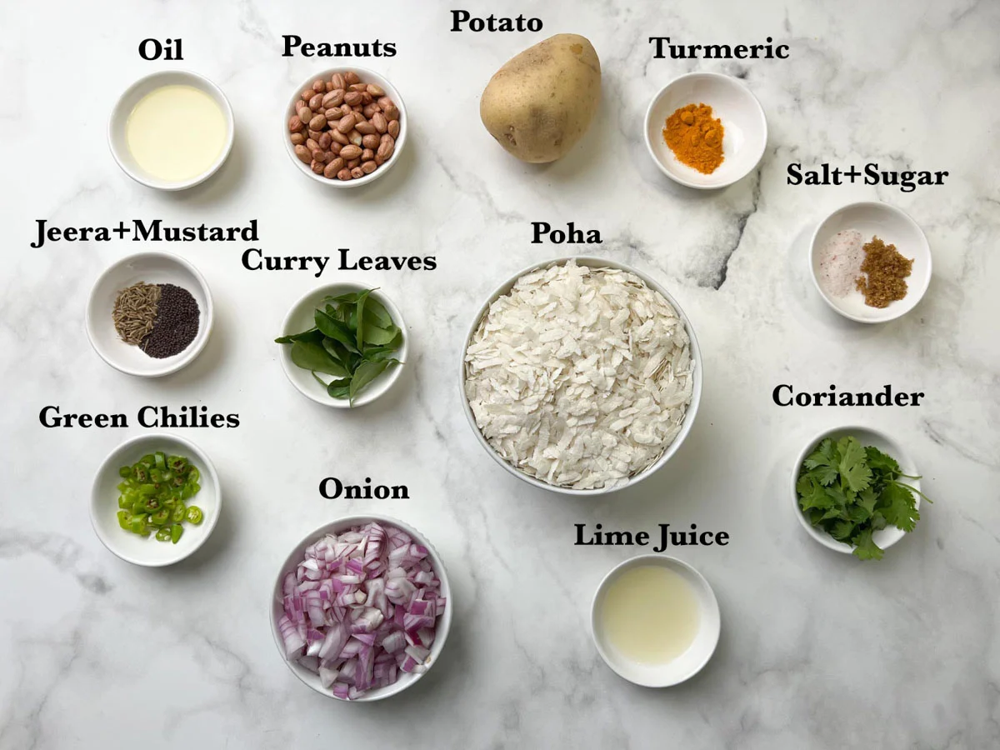

Recipe Details
Kanda Poha, also known as Kande Pohe in Maharashtra is a breakfast dish that originated
from the western states of India. And this Kanda Poha recipe is my version of the classic comfort food.
Ingredients
Poha: Medium or Thick poha is preferred to make this recipe. When rinsed, it gets fluffy and absorbent.
It is easily available in Indian grocery stores. The thin poha doesn't work for this recipe, as it turns mushy when rinsed.
You may also use red or brown rice poha.
Onion: I used finely chopped red onion. You can also yellow or white onions.
Potatoes: I used one medium Yukon gold potato. However, you can make this poha without potatoes
as well.
Spices: a tempering (tadka) made using mustard seeds, cumin seeds (jeera), curry leaves, and green
chilies. Turmeric powder is also used for color and flavor.
Peanuts: You can add peanuts for the crunch.
Oil: You can use any cooking oil.
Garnish: garnish with coriander leaves and freshly grated coconut (optional).

Instructions
Gently rinse poha in a colander under running water 2-3 times until they soften, and then drain out all the water.
When you press with your fingers, it should break easily. Keep it aside.
Heat oil in a Kadai. Add raw peanuts and fry until they turn golden brown. Remove the peanuts to a plate and
set them aside.
step to roast the peanuts collage.
In the same kadai, add mustard and cumin seeds and let them splutter.
Then add green chilies, curry leaves, and chopped onion. Saute until onions turn soft and translucent.
step to prepare the tempering and cook onions
Next, add cubed potatoes (or mixed vegetables) and cook for 2-3 minutes. To make simple plain poha, you
can skip adding potatoes or veggies.
Cover and cook on medium-low heat till the potatoes are soft and perfectly cooked. Sprinkle some water
if required. (You can also use pre-boiled cubed potatoes to it and saute for 2 minutes).
step to cook potatoes for kanda poha
Add rinsed and drained poha, turmeric, salt, and sugar. Mix everything well.
If you feel the pohe is too dry, sprinkle some water. Cover it with a lid and cook for 2 minutes on low heat.
step to add pohe and spices and cook
Turn off the heat. Add the lemon juice and roasted peanuts, and give a quick mix. Garnish with coriander leaves.